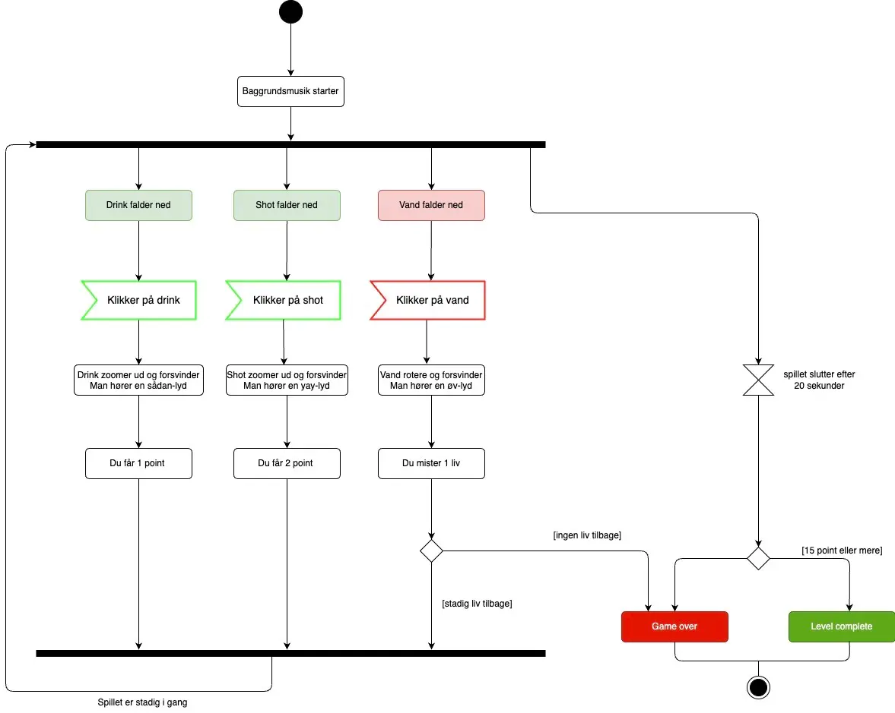

Tema 04
Grundlæggende animation
Introduktion
I tema 4 arbejdede vi med at udvikle et simpelt, animeret spil med faldende gode og dårlige elementer - programmeret i JavaScript. Her fandt jeg på spillet Stive Lis.
Fremgangsmåde og processer
I dette tema lavede jeg spillet Stive Lis, hvor det handler om at Lis skal forblive fuld og have en sjov aften på baren. Derfor handler spillet om Lis skal have mere at drikke og derfor ikke vand, som jeg synes kunne være et sjovt spil for unge.
Forløbet startede med skitser og tegne i hånden, hvorefter vi brugte Adobe Illustrator til at rentegne og skabe spillets visuelle elementer. Vi anvendte State Machine-diagrammer til at planlægge spillets funktionalitet og strukturere de nødvendige JavaScript-funktioner, så animationerne kunne køre korrekt.
Hvad har jeg lært på dette tema?
I dette tema har jeg lært at udarbejde skitser og rentegne dem i Adobe Illustrator.Jeg har arbejdet meget mere med JavaScript-programmering baseret på aktivitets- og state machine-diagrammer for at strukturere spillets funktioner. Derudover har jeg anvendt CSS til både positionering og animation, hvilket gav spillet liv og bevægelse.